YA Fiction
Genres:
Science Fiction: Stories that explore technological possibilities based on current scientific research.
Books to read: Scythe, Unwind, Warcross
Fantasy: Books involving magic and other worlds.
Books to read: The Young Elites, Children of Blood and Bone, Six of Crows, Every Day
 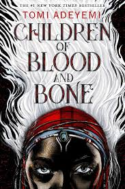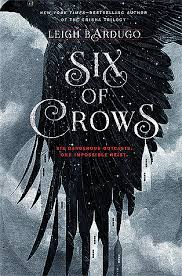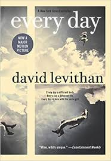
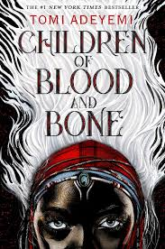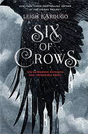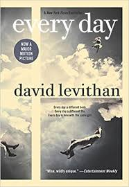
Historical Fiction: Stories that take place in a different time period.
Books to read: Mister Death’s Blue Eyed Girls
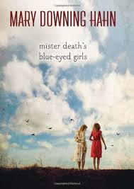
Realistic Fiction: Books about real-world stories.
Books to read: Moxie, Holding Up the Universe, Turtles All the Way Down, The Hate U Give
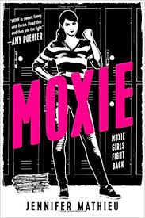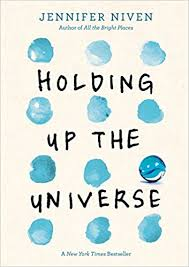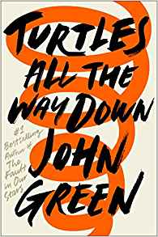
School Reading List: Books for AP literature that are actually good
Books to read: Frankenstein, Wuthering Heights, 1984, The Great Gatsby, Pride and Prejudice
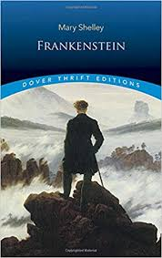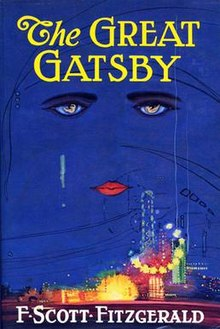